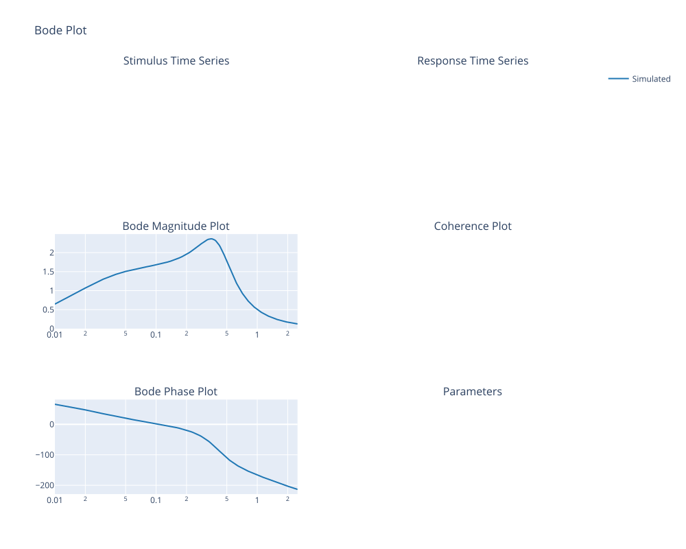
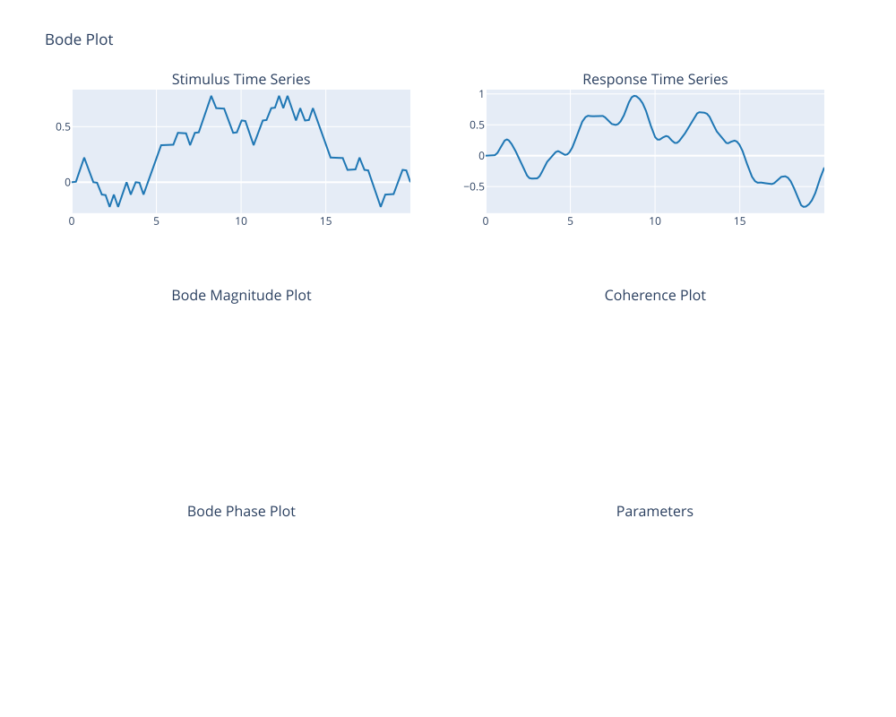
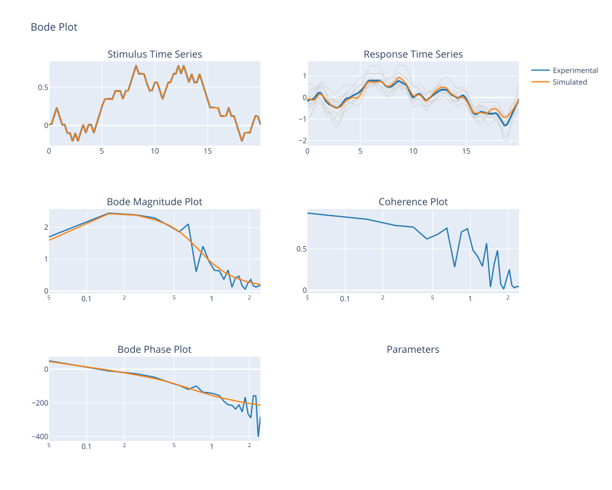
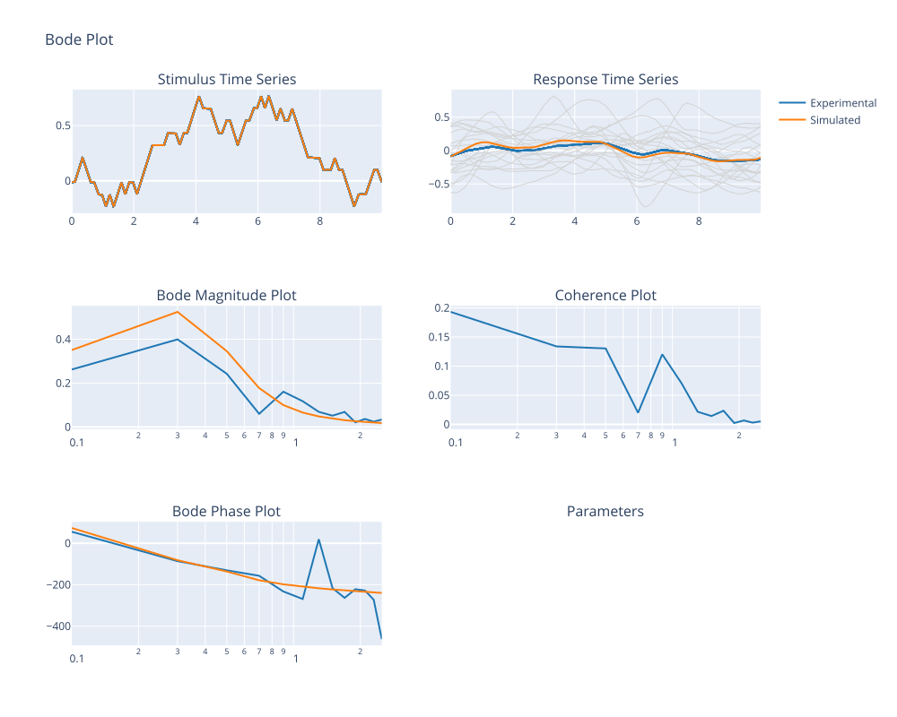

Model simulation and fitting
This Notebook demonstrate the use and basic functionality of the model simulation and parameter fitting capabilities of BalancePy.
# Import balancepy and necessary libraries
import balancepy as bp
import numpy as np
from balancepy.model_sim.peterka18 import Peterka18 as P18
# render plots as static image - only needed for documentation
import plotly.io as pio
pio.renderers.default = "svg"
# Set the path containing example data
data_path = 'data/'
To initialize a model instance height and weight are required.
# Define subject antrhopometry
weight = 53
height = 1.66
# create a model instance for the subject
model_surf = P18(weight, height)
# show default model parameters (not tuned to experimental data)
model_surf
balancepyModel(ModelName=Peterka 2018,
ParameterSet(
mgh: value=8.05, bounds=(10, 20), fixed=True,
J: value=0.9, bounds=(0, 0), fixed=True,
Kp: value=11.28, bounds=(8.457096571348341, 20.13594421749605), fixed=False,
Kd: value=3.22, bounds=(0.805437768699842, 8.05437768699842), fixed=False,
W: value=0.45, bounds=(0.01, 1), fixed=False,
dt: value=0.16, bounds=(0.1, 0.3), fixed=False,
Kt: value=0.01, bounds=(0, 0.05), fixed=False
),
Frequencies=250 frequencies from 0.01 to 2.5,
Fit Reference=Not defined,
Sampling Rate=Not defined)
As no further information was given, the model contains only the frequency response function for the default parameters, which depend on the subjects height and weight. Calling a plot of the model displays the frequency response function.
model_surf.plot()
No experimental data available for plotting

The model can be used to run a stimulus in the time domain using self.simulate_timedomain(stimulus, samplingrate). The function outputs a stimulus-response dataclass object (sr_data), which can be used to generate a plot of the output.
# Run time domain simulations
# Define a stimulus
samplingrate = 100 # Hz
stim = bp.make_prts(type="prts_20s", samplingrate_Hz=samplingrate)
time = np.arange(0, len(stim) / samplingrate, 1 / samplingrate)
# Run time domain simulation
data_sim = model_surf.simulate_timedomain(stim, samplingrate)
data_sim.plot()

In the following example, experimental data is added to the model and the model parameters are fitted to this reference dataset.
# Experiment consisted of a simultaneous visual and surface tilt perturbation
# here, only the surface tilt is analyzed and used for fitting
# Load experimental data
com, stim, time = bp.getdata_legacy(
(data_path+'d1_vis1_surf1.csv'),
height,
resample = True,
cut_to_cycles = True,
end_time = 220,
cycle_start_samples = 20*90,
cycle_length_samples = 20*90,
# stimulus = 'stim_pitch',
stimulus = 'analog4'
)
# create a sr_data object instance
data_exp = bp.sr_data(90,-stim, com, 'prts')
# Create model instance
model_surf = P18(weight, height)
# Add experimental data to model and perform fit
model_surf.fit(data_exp)
# Create figure
figure = model_surf.plot()
# show model details after fitting
print(model_surf)
# Show figure with experimental data and simulations using fit results
figure.show()
balancepyModel(ModelName=Peterka 2018,
ParameterSet(
mgh: value=8.05, bounds=(10, 20), fixed=True,
J: value=0.9, bounds=(0, 0), fixed=True,
Kp: value=10.83, bounds=(8.457096571348341, 20.13594421749605), fixed=False,
Kd: value=3.89, bounds=(0.805437768699842, 8.05437768699842), fixed=False,
W: value=0.58, bounds=(0.01, 1), fixed=False,
dt: value=0.16, bounds=(0.1, 0.3), fixed=False,
Kt: value=0.01, bounds=(0, 0.05), fixed=False
),
Frequencies=25 frequencies from 0.05 to 2.4499999999999997,
Fit Reference=Defined as data_exp.frf,
Sampling Rate=90 Hz)

In this example, a visual stimulus is added to the model and a fit is performed.
# Data analysis and model fit for 10s long visual prts stimulus
# Define subject antrhopometry
weight = 53
height = 1.66
# create a model instance for the subject
model_vis = P18(weight, height)
# Load experimental data
com, stim, time = bp.getdata_legacy(
(data_path+'d1_vis2.csv'),
height,
resample=True,
cut_to_cycles=True,
end_time=220,
cycle_start_samples=20*90,
cycle_length_samples=10*90,
stimulus = 'stim_pitch',
)
model_vis.params['W'] = 0.1
data_exp = bp.sr_data(90, stim, com, 'prts')
model_vis.fit(data_exp)
print(model_vis)
figure = model_vis.plot()
figure.show()
balancepyModel(ModelName=Peterka 2018,
ParameterSet(
mgh: value=8.05, bounds=(10, 20), fixed=True,
J: value=0.9, bounds=(0, 0), fixed=True,
Kp: value=8.46, bounds=(8.457096571348341, 20.13594421749605), fixed=False,
Kd: value=3.83, bounds=(0.805437768699842, 8.05437768699842), fixed=False,
W: value=0.06, bounds=(0.01, 1), fixed=False,
dt: value=0.25, bounds=(0.1, 0.3), fixed=False,
Kt: value=0.02, bounds=(0, 0.05), fixed=False
),
Frequencies=13 frequencies from 0.1 to 2.5,
Fit Reference=Defined as data_exp.frf,
Sampling Rate=90 Hz)

In this example a model instance is created using a config file. The alternative use of a config file can be useful for batch processing and to ensure consistent model parameters and settings across different runs.
config = {
"ModelName": "Peterka2018",
"samplingrate_Hz": 90,
"mass_kg": 53,
"height_m": 1.66,
"data_exp": data_exp
}
model_config = P18(config=config)
model_config.fit()
figure = model_config.plot()
print(model_config)
figure.show()
balancepyModel(ModelName=Peterka2018,
ParameterSet(
mgh: value=8.05, bounds=(10, 20), fixed=True,
J: value=0.9, bounds=(0, 0), fixed=True,
Kp: value=8.46, bounds=(8.457096571348341, 20.13594421749605), fixed=False,
Kd: value=3.83, bounds=(0.805437768699842, 8.05437768699842), fixed=False,
W: value=0.06, bounds=(0.01, 1), fixed=False,
dt: value=0.25, bounds=(0.1, 0.3), fixed=False,
Kt: value=0.02, bounds=(0, 0.05), fixed=False
),
Frequencies=13 frequencies from 0.1 to 2.5,
Fit Reference=Defined as data_exp.frf,
Sampling Rate=90 Hz)